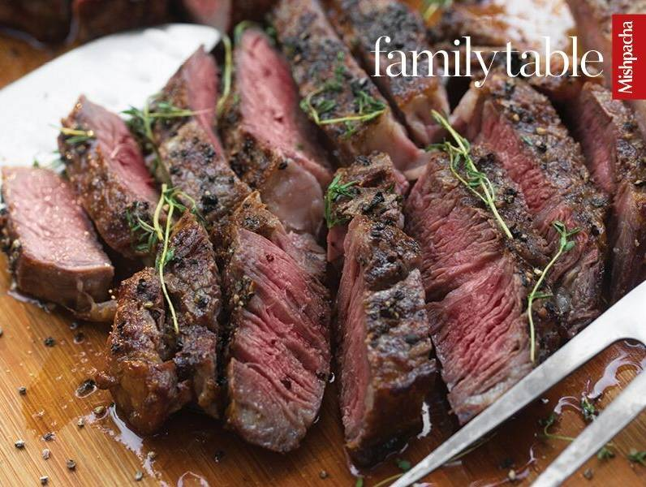

Chocolate Chip Cookies
Cook & Prep: 35 m
Difficulty: Medium
Ingredients:
- 2 large eggs
- 1 tablespoon vanilla extract
- 1 teaspoon cinnamon
- 1 teaspoon cardamom
- 1 overripe banana
- zest and juice of 1/2 an orange
- 2 cups whole wheat flour
Start Cooking
Prepare The Chocolate Chip Cookies
- Cream margarine and sugar until fluffy.
- Add eggs, one at a time, then add all other ingredients and mix well.
- Form into balls and place two inches apart on cookie sheet. Bake at 350 degrees Fahrenheit for 25 minutes until golden.
Classic Easy Chicken Soup
Cook & Prep: 2 h
Difficulty: Easy
Ingredients:
- 4 chicken breasts or 1 whole chicken
- 2 pounds chicken or turkey bones
- 4 carrots
- 4–5 stalks celery
- 1 large parsley root
- 1 large onion
- 1/2 a small knob celery (optional)
- 3 cloves garlic
- 1/2 a zucchini
- 1/2 a sweet potato (optional)
- 1 tablespoon salt
Start Cooking
Prepare the Chicken Soup
- Place bones in wrap 'n boil bag.
- Place all ingredients into eight-quart pot, add water to fill pot.
- Bring to a boil.
- Reduce heat, cook for one and a half to two hours.
Greenberger perfect Steak

Cook & Prep: 25 m
Difficulty: Easy
Ingredients:
- 1- and- 1/2- to 2-inch (4- to 5-centimeter) bone-in rib steaks
- kosher salt
- coarse black pepper
- garlic
- fresh herbs (I love rosemary and thyme)
Start Cooking
Prepare the Steak
- At least two and up to 24 hours before grilling (the longer the better), salt your meat and place in the refrigerator, uncovered, preferably in a roasting pan with a raised rack so airflow can get underneath as well.
- Take your meat out of the fridge about two hours before you plan to grill so that it can reach room temperature. This ensures a more even doneness throughout. If the center is cold to start, it will take longer to cook, which means the outer layers will burn before the inside is cooked properly. Chop herbs if using fresh (highly recommended). Mix herbs and spices and coat the meat.
- Preheat the grill to super-hot.